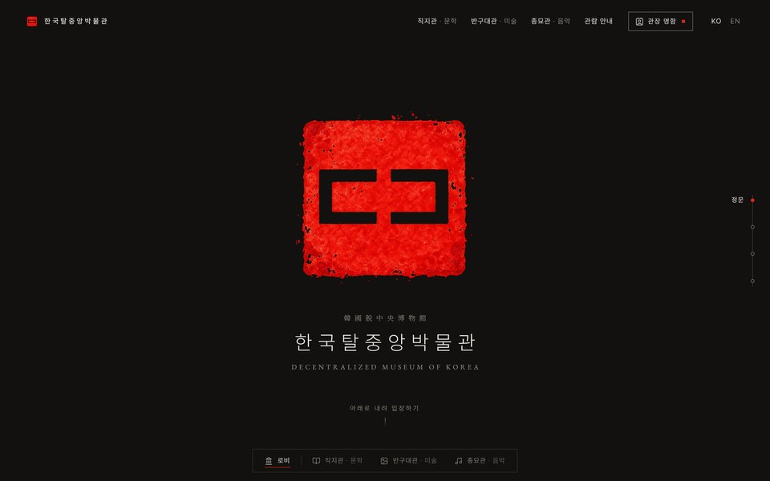

Projects
Projects
National R&D projects, public systems, research and production since 2018. The archive below lists every piece of work since 2013.
National R&D projects and public systems, 2023 to present

MFDS · National R&D · 2025 to 202601
KACE: AI nutrient estimation, a selected national R&D project
Proposal, evaluation deck and four-year roadmap for estimating the nutrients of processed foods with AI, and the first year’s research.
Open
NIFDS · National platform · 2024 to 202602
K-HBM: from survey screens to a live platform
Designed the survey tool now used in three government research projects, led acceptance testing and specified the administrator screens of a national platform in operation. Two conference posters, both awarded.
Open
National environmental-health R&D · 2025 to 202603
DEFs: a digital survey system for exposure factors
Proposal and evaluation deck, system diagrams, example screens, the participant app design and training data for AI recognition. Selected; under way since April 2026.
Open
MFDS · Public system · 2024 to 202604
Toxinfo: running a public toxicity information system
A three-year operations contract (2024 to 2026) for the Ministry of Food and Drug Safety’s toxicity information system: releases, screens, security checks, reports, and a chatbot pilot with KAIST that became an EMNLP 2025 paper.
Open
MFDS · Public system · 2024 to 202605
Laboratory Animal Resource Bank: specification and redesign
Specified the 2024 upgrade and planned the 2025 redesign: 38 menus to 20, 200 tables to 85, every planned item delivered.
OpenThesis, education programs, culinary research

Chung-Ang University · M.S. thesis · 202606
Master’s thesis: AI detection of food-safety signals in online text
A fine-tuned model extracts signals more accurately than a large language model at a fraction of the compute, and scores them in line with ratings from five experts.
Open
Incheon Seo-gu Office · 2022 to 202307
Education programs, planned and run
Planned and ran sixteen resident courses over seventeen months at an urban regeneration center; decks built for the residents’ cooperative won a grand prize and a national excellence award.
Open
Sempio Foods · Culinary research · 201808
Culinary research at Sempio
Ingredient research for the cooking science team, and a Sebasi talk on cooking science planned and scripted end to end, published on YouTube.
OpenProduction and AI

Personal project · Online museum · 202609
Decentralized Museum of Korea
An online museum of public-domain literature, art and music, open to anyone, anywhere. I set its name and principles and built its three halls with AI.
Open
Production · 2017 to 202610
Design, film and photography
A demonstration film for the K-HBM platform, two documentaries, print and photography: production handled in-house, from planning to final cut.
Open
AI-assisted workflow · 202611
Working with AI
Standing rules, a persistent memory and script-based builders keep AI output checkable in daily work; the dashboards, screen designs and apps on this site were built that way.
OpenArchive